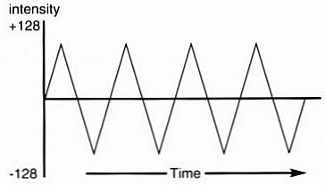
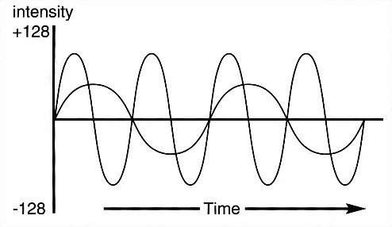

This Chapter explains how to exploit the superb sound capabilities of the Amiga. It will deal with simple sound effects and the use of music in AMOS Professional programs.
Generally, the sound capabilities of a television set are terrible. To release the full potential of AMOS Professional stereo sound, a hi-fi system or personal stereo should first be connected to the Amiga's pair of stereo phono sockets.
All AMOS Professional sound commands operate independently from games and utility routines, so that they can never interfere with your programming. On the contrary, they should enhance your work in any way that you chose, acting as markers, adding realism, soothing, shocking or providing comic relief.
Any imaginable sound effect can be used in an AMOS Professional program, whether it is natural, synthetic, pre-recorded or composed by you. In fact the choice is so vast that the next two Chapters are devoted to the wonders of sound samples! A whole bank of pre-recorded effects has been prepared for your use, but there are three common sound effects that can be called up by their own commands and used for testing and punctuating your routines.
instruction: generate explosive sound effectBy making use of interrupts to simulate "white noise", the BOOM command plays a realistic explosive sound effect. This does not delay the program at all, so it may be necessary to use WAIT between successive explosions, or to create ricochet and echo effects For example:
Curs Off : Centre "Thunderbolt and Lightning"
Flash 1, "(FFF,1)(000,147)(A5F,2)
Boom : Wait 150: Boom : Cls
Centre "Very Very Frightening"
Wait 50 : Boom
instruction: generate percussive sound effect
Shoot
The SHOOT command generates a simple sound effect in exactly the same way as BOOM. For example:
Shoot : Wait 25: Shoot : Print "Ouch!"
instruction: generate pure tone
Bell
Bell pitch
Unlike the built-in explosive sound effects, BELL produces a simple pure tone.
The frequency or "pitch" of this sound can be changed by adding a pitch value after the BELL command, ranging from 1 for a very deep ring, up to 96 for an ultra high pitched sound. You can hear the range of frequencies with this example:
For F=1 To 96
Bell F : Wait F/10+1 : Rem Vary delay
Next F
The values from 1 to 96 that are used to control the pitch of the BELL sound correspond to the notes on the keyboard of a piano. The white key at the extreme left-hand side of the keyboard is known as Bottom C, and corresponds to pitch value 1. Value 2 is the equivalent to the black note next to it, which is a C#, and so on up to "Middle C" at pitch value 37, then all the way up to 96. Grand piano keyboards run out of notes after 88, and most synthesizer keyboards have a lot less than that.
In Western music, notes are given their own code letter so that musicians can all refer to the same pitch when they try and play together. These letters repeat themselves after twelve notes, and each group of twelve is known as an "octave".
Here is a table of pitch values, along with their musical note equivalents and octave groupings.
| Note | 0 | 1 | 2 | 3 | 4 | 5 | 6 | 7 |
| C | 1 | 13 | 25 | 37 | 49 | 61 | 73 | 85 |
| C# | 2 | 14 | 26 | 38 | 50 | 62 | 74 | 86 |
| D | 3 | 15 | 27 | 39 | 51 | 63 | 75 | 87 |
| D# | 4 | 16 | 28 | 40 | 52 | 64 | 76 | 88 |
| E | 5 | 17 | 29 | 41 | 53 | 65 | 77 | 89 |
| F | 6 | 18 | 30 | 42 | 54 | 66 | 78 | 90 |
| F# | 7 | 19 | 31 | 43 | 55 | 67 | 79 | 91 |
| G | 8 | 20 | 32 | 44 | 56 | 68 | 80 | 92 |
| G# | 9 | 21 | 33 | 45 | 57 | 69 | 81 | 93 |
| A | 10 | 22 | 34 | 46 | 58 | 70 | 82 | 94 |
| A# | 11 | 23 | 35 | 47 | 59 | 71 | 83 | 95 |
| B | 12 | 24 | 36 | 48 | 60 | 72 | 84 | 96 |
The Amiga produces sound like a river, and AMOS Professional allows you to split this river into four separate channels, all pouring out at the same time, but each capable of individual control. These channels can be heard individually, or mixed together, or directed to the left and right creating stereo sound. They can also be individually increased and decreased in volume, or dammed up altogether.
Each of these channels can be given a different "voice", and each voice can be controlled in terms of volume and direction.
instruction: control sound volume
Volume level
Volume voice,level
The VOLUME command controls the level of sound flowing through one or more channels, ranging from zero (complete silence) up to 63 (ear-splitting), like this:
For L=0 To 63
Volume L: Bell 80 : Wait 5
Next L
Once the VOLUME level has been set, all future sound effects and music will be delivered at that level, across all four channels. In order to create stereo effects and perfect sound mixes, each of the voices needs to be adjusted independently from one another.
instruction: activate voice
Voice bit-mask
Soundtracks are made up of one or more voices, acting independently or together. The VOICE command is used to activate voices by setting a bit-mask, with each bit representing the state of one of the four available channels through which the voices flow. To play the required voice (from 0 to 3) simply set the relevant bit to 1, otherwise a value of zero will keep the voice silent. Here are some example settings:
Voice %1111 : Rem Activate all voices
Voice %0001 : Rem Activate voice 0 only
Voice %1001 : Rem Activate voices 3 and 0
The volume of each voice can now be controlled by specifying voices and volumes, like this:
Volume %0001,63
Boom : Wait 100: Rem Channel 1 loud
Volume %1110,5
Boom : Wait 50: Rem Channels 2,3,4 soft
Bell 40 : Wait 50 : Volume 60: Bell 40
Here are some common values for voice settings, that can be used to make programming a little easier:
| Value | Voices used | Effect |
|---|---|---|
| 15 | 0,1,2,3 | use all four voices |
| 9 | 0,3 | combine output to left speaker |
| 6 | 2,4 | combine output to right speaker |
| 1 | 0 | use voice 0 |
| 2 | 1 | use voice 1 |
| 4 | 2 | use voice 2 |
| 8 | 3 | use voice 3 |
instruction: play a voice
Play pitch,delay
Play voice,pitch,delay
instruction: stop a voice playing
Play Off
Patterns of individual notes can be played, allocated to any voice, given a pitch and delayed for pause, using just one PLAY command.
The voice parameter is optional, allowing notes to be played through any combination of the Amiga's four voices, and is set by the usual bit-map format.
The pitch parameter uses the values from 1 to 96, which correspond to the notes in the table given earlier. Delay sets the length of any pause between this PLAY command and the next instruction in the program, with a value of zero starling the note and immediately going on to the next command.
The next example demonstrates this technique, including stereo harmonies:
Play 1,40,0: Play 2,50,0: Rem No delay
Wait Key
Play 1,40,15: Play 2,50,15: Rem Delay
Rem Play a random sequence of notes
Do
V=Rnd(1 5): P=Rnd(96): Play V,P,3
Loop
PLAY is not restricted to pure notes. It is possible to assign complex wave forms to voices, using the WAVE and NOISE commands, which are explained next. To stop the playing process, simply turn it off like this:
Play Off
Every individual sound has its own identity pattern, which is the equivalent of an audio fingerprint. This is because each sound is composed of its own unique frequencies. In the same way that a hospital monitor displays a moving "wave" which pulses in lime to the frequencies of a heartbeat, different sounds create their own wave forms. For example, a cymbal crash has a wave form of jagged peaks very close together, whereas the smooth harmonics of a cello make much more rounded waves.
With AMOS Professional, the shape of a wave form is set using a list of 256 numbers, with each number representing the intensity of an individual section of the wave.
instruction: define a wave form
Set Wave number,shape$
The SET WAVE command sets the wave form of an individual sound, that can then be used at various pitches to create music or sound effects. This command requires two parameters, the number of the wave to be set, followed by the shape of this pattern, held in a string.
Wave numbers zero and 1 are already allocated, so these numbers should not be used. Wave zero holds a random noise pattern, used to generate the explosive effects of BOOM and SHOOT, while wave number 1 is a smooth pattern in the shape of a sine wave, which is used as the "template" for the pure tones needed by the PLAY and BELL commands. So when setting your new wave patterns, use the identification numbers from 2 upwards.
Setting the parameter for the shape of the wave form is a little more complicated.
Each one of the 256 numbers which make up the shape of the wave form sets a single level of intensity for that single part of the wave. Each one of these intensities can hold a possible value ranging from -128 up to 127. Look at the diagram below. The vertical scale represents this range of intensities (-128 to 127) and the horizontal scale shows the physical length of the wave form, in other words the individual moments of time as the wave is played (256).
This triangular wave pattern does not make a very exciting sound, but it serves as a simple introduction to making your own wave forms.
Because AMOS Professional strings can only hold positive numbers from zero to 256, the negative values in this wave form need to be converted before use. This is extremely easy, and is achieved by adding 256 to the negative numbers in the list! In other words, a value of -50 would be entered as 206, like this:
-50+256=206
The following program shows how the sort of wave form in the above diagram could be created The wave form is then assigned to a wave and played, which is explained a little later.
S$=" " : Rem Clear wave form string
For W=-128 To 127
X=W : If X<0 Then Add X,256
S$=S$+Chr$(X)
Next W
Set Wave 2,S$
Wave 2 To 15: For S=10 to 60: Play S,10: Next S
The wave forms of musical instruments are much more complicated than the last example, but they are not too difficult to reproduce. By combining several sine waves together, with each sine wave having a different starting point, the type of pattern shown in the next diagram is achieved.
This sort of wave form generates smooth harmonics, which can then be used as the "templates" for musical notes, and the sort of routine in the next example can produce typical sine waves:
SHAPE$=" " : Degree
For S=0 To 255
V=Int((Sin(S)/2+Sin(S*2+45)/4)*128)+127
SHAPE$=SHAPE$+Chr$(V)
Next S
Set Wave 2,SHAPE$ : Wave 2 To 15
For N=10 To 60: Play N,10 : Next N
instruction: assign a wave to sound channel
Wave number To voices
The WAVE command is used to assign the specified wave number to one or more sound channels.
The voice parameter contains a bit-map in the standard format, and if a bit pattern is set to 1 then the appropriate voice is used to PLY the sound. Remember that wave number zero is already reserved for the NOISE channel, and wave number 1 contains a smooth sine wave for pure tone. Here are some examples:
Wave 1 To %1111 : Rem Play pure tone through all voices
Play 60,0
Wave 0 To %0001 : Rem Use voice 0 for noise
Play 20,10
instruction: assign noise wave to sound channel
Noise To voices
This command has the same effect as assigning the white noise wave form number zero to the selected voices, and it is used to form the foundations for a whole range of special effects, such as explosions and percussion drumming. The bit-pattern used to set one or more voices has already been explained above. Here is an example:
Noise To 15 Rem All four voices
Play 60,50
Play 30,0
instruction: assign a sample to the current wave
Sample number To voices
This is the most powerful of the wave commands. SAMPLE is used to assign the specified sound sample number, which is already stored in the Sample Bank, directly to the current wave form. The voices to be used are set in the usual way. When PLAY is used, this sample will be taken from the Sample Bank and used as the "musical instrument" to be played. Try this example:
Load "AMOSPro_Examples:Samples/Mixture.Abk",6
Sam Bank 6
Sample 5 To 15
For S=20 To 50
Play S,50
Next S
The pitch values that can be applied to any particular sample will vary, but normally anything between 10 and 50 is satisfactory.
instruction: delete a wave
Del Wave number
To delete a wave that has been set up with a SET WAVE instruction, simply use this command followed by the number of the wave to be erased.
When this has been done, all deleted voices will be set to the standard default sine wave. The pre-set wave numbers zero and 1 can be manipulated, but they cannot be eradicated.
An "envelope" is audio jargon for how a sound is manipulated during the brief period of tin that it is played. In other words, whether it bursts into life or makes a more subtle entry (attack), whether it fades away with dignity or lives life to the full (decay), how long it hangs on for (sustain) and finally, the manner in which it meets its end (release). All of this is achieved simply by changing the volume of individual sections of the wave form.
instruction: create a volume envelope
Set Envel wave number,phase number To duration,volume
AMOS Professional uses envelopes to change your original wave forms according to a set pattern. The parameters are as follows:
The wave number sets the wave form to be affected, and any number can be used including the pre-set wave numbers zero and 1.
The phase number refers to one of seven individual sections of the original wave form that is to be defined, ranging from 0 to 6.
The duration controls the length of this particular segment (phase number) of the wave form, and is expressed in units of one 50th of a second. This is how the speed of a volume change in any phase of the wave form is controlled.
Volume specifies the volume to be reached by the end of this phase, ranging from zero for silence up to 63 for full blast.
In the next example, an envelope for wave form number one is set, so that segment zero (its first phase) lasts for four seconds, ramping up to full volume by its end, no matter what the original volume was at the start of this phase.
Set Envel 1,0 To 200,63
instructions: toggle audio filter
Led On
Led Off
Most tape recorders and hi-fl systems have some sort of filtering system to "clean" up sound by eliminating the high frequencies that generate unwanted hiss. When filters are used, there is always a trade off between overall sound quality and clear definition.
For example, although some distortion may be eliminated, certain percussion sounds will be robbed of their characteristics. The LED filter changes the way these high frequencies are treated by the system, but by using the LED OFF command, you can recapture the essential quality of many instrumental sounds.
The difference made by the LED filter can be clearly heard in the following example:
Load "AMOSPro_Examples:Music/Music.Abk"
Music 1
Do
If Mouse Key=1 Then Led On: Print "LED ON!"
If Mouse Key=2 The Led Off : Print "LED OFF"
Loop
Audio quality is very much an individual choice, and the LED filter will sound more pleasing with certain sequences, but distorted with others. Warbling the filter on and off can also give some interesting effects.
The name LED derives from the light-emitting diode that activates the power light on your Amiga. When the LED filter is toggled off and on, this light is also turned off and on to indicate the status of the filter.
function: test volume of a voice
volume=Vumeter(voice)
Volume meters (Vu-meters) are a familiar sight on the control panels of audio equipment. AMOS Professional is not only able to monitor the volume level of any selected voice number from 0 to 3, it can also use the value of the volume intensity to make graphics dance around in response to the intensity of a soundtrack!
The value returned is given as the volume intensity, ranging from silence (0) up to full volume (63).
The best way to understand the effect of all the commands in this Chapter is to hear them working. Be sure to try out all of the demonstration programs that are available via the HELP feature.
The AMOS Professional music system allows backing tracks to be added to any program. Music can be created from a variety of sources, including original samples and compositions, which are explained in the following two Chapters. These backing tracks are converted into the AMOS Professional format, and held in the Music Bank.
Music tracks are loaded with the MUSIC command, volume is controlled by MVOLUME, and speed by MVOLUME. Individual music passages can be halted using the MUSIC STOP instruction, and all music is halted by MUSIC OFF.
For a taster of these techniques in action, load this ready-made example:
Load "AMOSPro_Examples:Music/Music.Abk"
Music 1: Mvolume 63 : Tempo 35